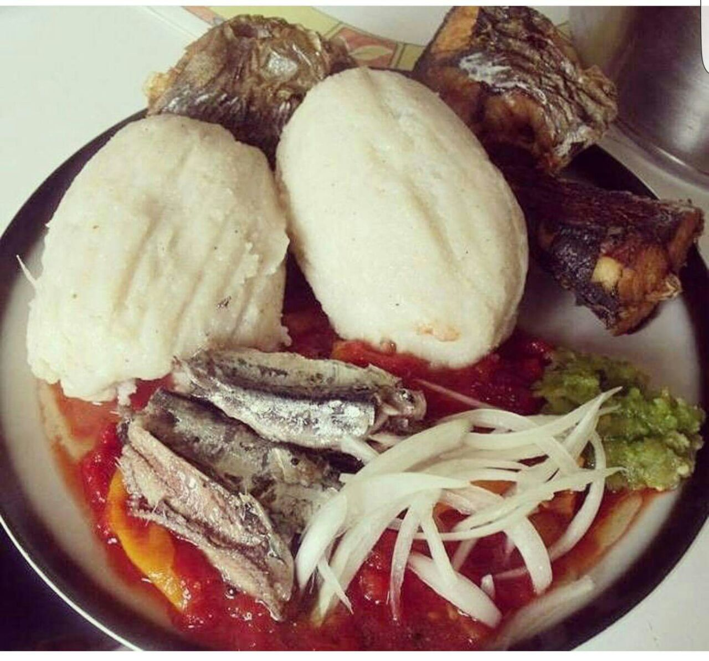
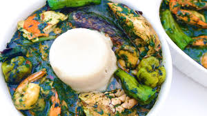
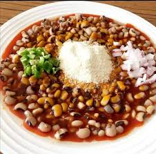
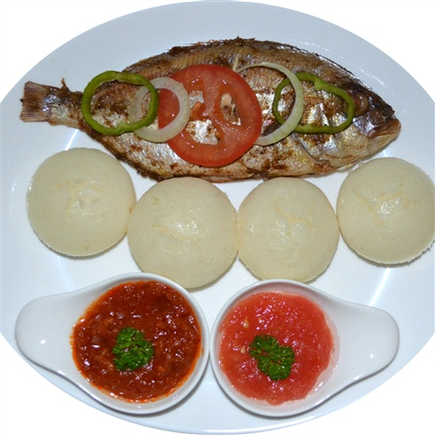
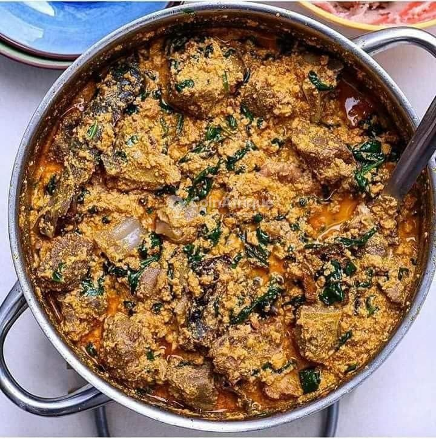
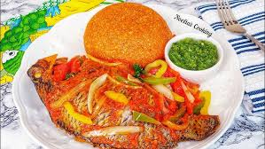
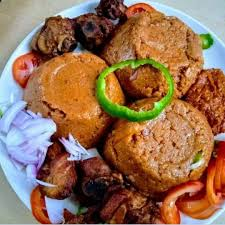

Bievenue sur KALL CUIS
Votre adresse incontournable pour déguster les saveurs du Togo.
Nos Plats 100% Togolais
Explorez notre sélection de plats typiques , allant de Kom vers d'autres nourritures. Découvrez la richesse des plats togolais !
Notre Catalogue de Plats
Kom
Le Kom est un plat traditionnel du Togo, préparé à base de maïs moulu. Il est souvent accompagné de sauces épicées, de viande ou de poisson, et est servi lors des repas familiaux. Le Kom est un plat consistant et très apprécié pour sa simplicité et son goût authentique.
Akoumé & Adémé
Akoumé et Adémé sont deux plats togolais emblématiques, combinés ici pour offrir une expérience culinaire unique. L'Akoumé, une pâte à base de maïs, est servie avec l'Adémé, une sauce riche à base d'épices, créant ainsi une harmonie parfaite de saveurs.
GARI FORTO

Le Gari Forté est un plat à base de semoule de manioc (Gari), mélangé avec du beurre et de l’huile de palme, puis agrémenté de légumes et de viande. Un plat très répandu au Togo, riche en saveurs.
Azo
L'Azo est un plat populaire au Togo, fait de haricots cuits. Il peut être accompagné de viande, de poisson ou de riz, et est souvent consommé lors des repas quotidiens ou lors des festivités.
ABLO
L’Ablo est un petit gâteau moelleux cuit à la vapeur à base de farine de maïs et de riz, légèrement sucré. Il accompagne souvent les sauces ou les viandes grillées au Togo.
GBOMA DESSI
Gboma dessi est un plat togolais à base de feuilles d’épinards mijotées avec de la viande ou du poisson, accompagné généralement d’Akoumé ou de riz.
PINON ROUGE
Le Pinon Rouge, un plat coloré et parfumé, est préparé à base de maïs et d'huile de palme, très apprécié au Bénin et au Togo.
DJINKOUME
Le Djinkoumé est un plat de farine de maïs cuit dans une sauce tomate épicée. Savoureux et idéal pour un repas en famille.
Nos Plats de Semaine
Explorez notre sélection de plats de cette semaine.
Kom
Le Kom est un plat traditionnel du Togo, préparé à base de maïs moulu. Il est souvent accompagné de sauces épicées, de viande ou de poisson, et est servi lors des repas familiaux. Le Kom est un plat consistant et très apprécié pour sa simplicité et son goût authentique.
Akoumé & Adémé
Akoumé et Adémé sont deux plats togolais emblématiques, combinés ici pour offrir une expérience culinaire unique. L'Akoumé, une pâte à base de maïs, est servie avec l'Adémé, une sauce riche à base d'épices, créant ainsi une harmonie parfaite de saveurs.
GARI FORTO
Le Gari Forto est un plat à base de semoule de manioc (Gari), mélangé avec du beurre et de l’huile de palme, puis agrémenté de légumes et de viande. Un plat très répandu au Togo, riche en saveurs.
Azo
L'Azo est un plat populaire au Togo, fait de haricots cuits. Il peut être accompagné de viande, de poisson ou de riz, et est souvent consommé lors des repas quotidiens ou lors des festivités.